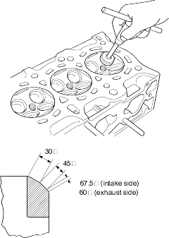
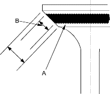

- Renew the valve seats in the cylinder head using a valve seat cutter.
- Carefully cut a 45o seat, removing only enough material to ensure a smooth and concentric seat.
- Bevel the upper edge of the seat with the 30o cutter and the lower edge of the seat with the 67.5o cutter (Intake) or 60o cutter (exhaust). Check the width of the seat and adjust accordingly.
- Make one more very light pass with the 45o cutter to remove any possible burrs caused by the other cutters.
Valve Seat Width:
Intake:
| Standard (New): | 0.85 - 1.15 mm
(0.033 - 0.045 in.) |
| Service Limit: | 1.60 mm (0.063 in.) |
Exhaust:
| Standard (New): | 1.25 - 1.55 mm
(0.049 - 0.061 in.) |
| Service Limit: | 2.00 mm (0.079 in.) |

- After resurfacing the seat, inspect it for even valve seating: Apply Prussian Blue compound (A) to the valve face. Insert the valve in its original location in the head, then lift it and snap it closed against the seat several times.

- The actual valve seating surface (B), as shown by the blue compound, should be centred on the seat.
- If it is too high (closer to the valve stem), you must make a second cut with the 67.5o cutter (Intake) or 60o cutter (exhaust) to move it down, then one more cut with the 45o cutter to restore seat width.
- If it is too low (closer to the valve edge), you must make a second cut with the 30o cutter to move it up, then one more cut with the 45o cutter to restore seat width.
NOTE: The final cut should always be made with the 45o cutter.